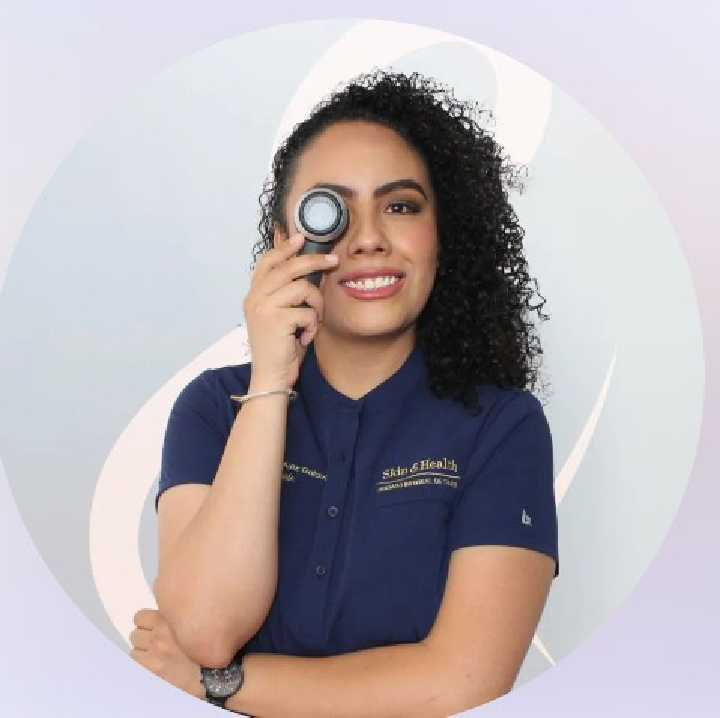

Dermatología con rigor médico, resultados naturales.
Tu piel, en manos expertas. Diagnóstico preciso, tratamientos personalizados y acompañamiento en cada paso. Salud, belleza y bienestar.
SALUD • BELLEZA • BIENESTAR
Consultorio dermatológico privado

Dra. Daniela Rodriguez
Especialidad en Dermatología. Enfoque en salud de la piel, belleza natural y bienestar — sin resultados exagerados, sin atajos.
Evaluación completa antes de proponer cualquier tratamiento.
Dosis y plan según tu tipo de piel, edad y objetivo.
Productos y protocolos con respaldo médico.
Seguimiento después de tu aplicación.
Tratamientos para tu piel
Clínicos y estéticos, para hombres y mujeres.
Dermatología clínica
Acné, manchas, rosácea, dermatitis, infecciones y cuidado de la piel sensible.
Dermatología estética
Bótox, rutinas personalizadas y tratamientos para luminosidad y textura.
Cuidado masculino y femenino
Planes distintos según tipo de piel, hormonas y estilo de vida.
Revisión de lunares
Evaluación dermatoscópica y seguimiento de lesiones sospechosas.
Skincare personalizado
Rutina simple y efectiva, sin comprar de más.
Tratamientos con Bótox
Frente, entrecejo, patas de gallo, cuello e hiperhidrosis. Ver menú abajo.
Menú de tratamientos con Bótox
Precios promedio de referencia en México. El costo final depende de las unidades y tu valoración médica en consulta.
Sesión 20-30 min • Resultados en 3-7 días • Duración 4-6 meses • ¿Duele? Molestia mínima, con agujas muy finas.
¿Cómo funciona?
Valoración
Revisamos tu piel, tu historial y tu objetivo.
Plan personalizado
Definimos zonas, unidades y presupuesto.
Aplicación
Sesión de 20-30 min en consultorio.
Seguimiento
Revisión y ajustes si los necesitas.
Agenda tu cita
Llena el formulario y se abrirá WhatsApp con tus datos listos para enviar. Sin registros complicados.
- Respuesta por WhatsApp
- Elige tratamiento, fecha y hora
- Para hombres y mujeres
WhatsApp: +52 55 4363 8085